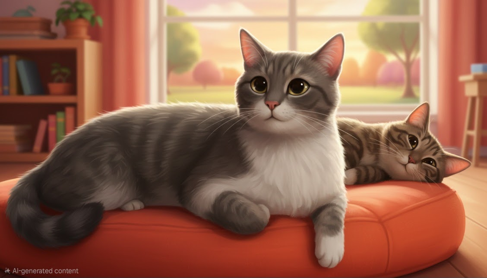
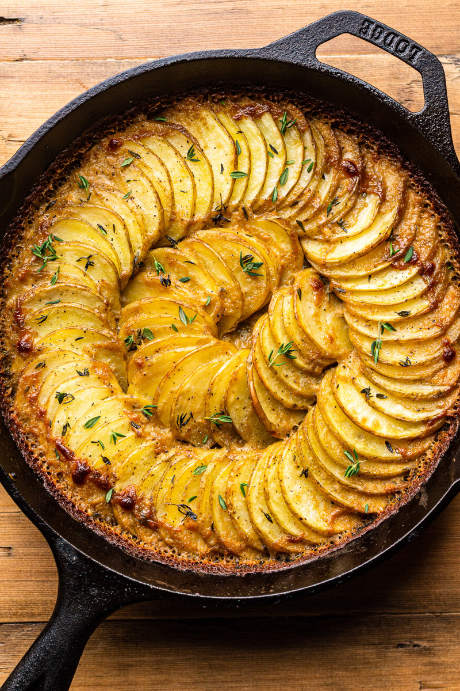

Radiology is the science and art of seeing inside the human body without a single cut. I love how it combines technology, physics, and medicine to reveal what is invisible to the naked eye.
From X-rays to CT and MRI — every image tells a story.
Fun fact: Radiology is often called “the art of seeing what others can’t.”

Cats are pure curiosity and calm in one small, fluffy body. Their quiet observation and sudden bursts of energy remind me that life can be both peaceful and playful.
Tiny observers, always watching — like little furry scientists.
Fun fact: Cats spend up to two-thirds of their lives sleeping, but they never miss anything important.

Gastronomy is where creativity, culture, and science meet on a plate. I’m passionate about how flavors, textures, and techniques can turn simple ingredients into unforgettable experiences.
Every dish is a story — from street food to fine dining.
“Cooking is chemistry you can eat.”

Gastronomy Ingredients Table
| Ingredient | Category | Flavor |
|---|---|---|
| Olive Oil | Fat | Rich & Smooth |
| Garlic | Aromatic | Sharp & Savory |
| Lemon | Acid | Bright & Fresh |